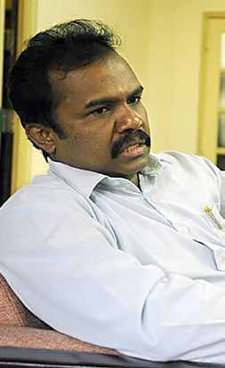
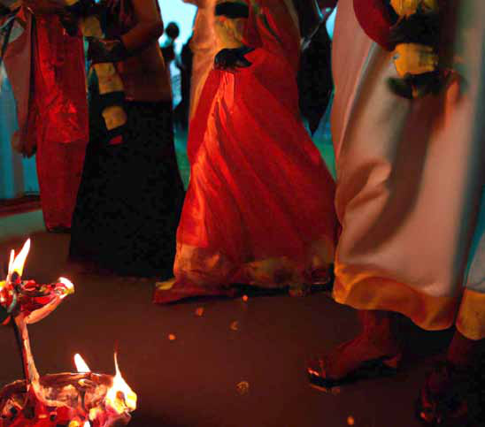
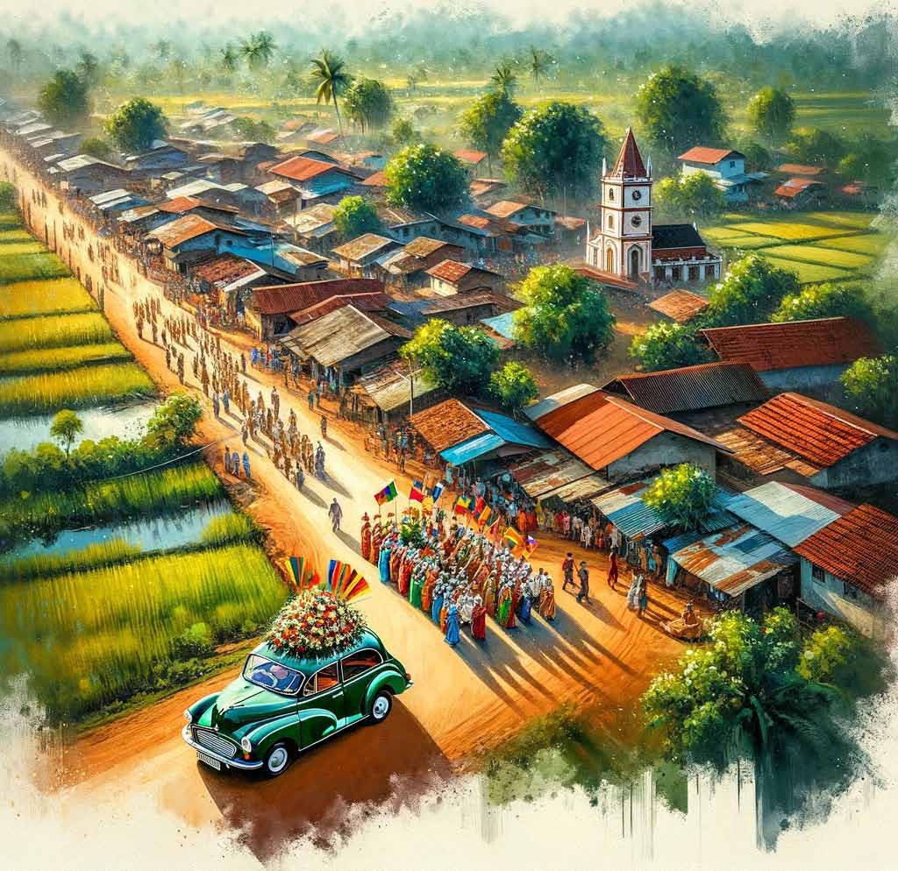
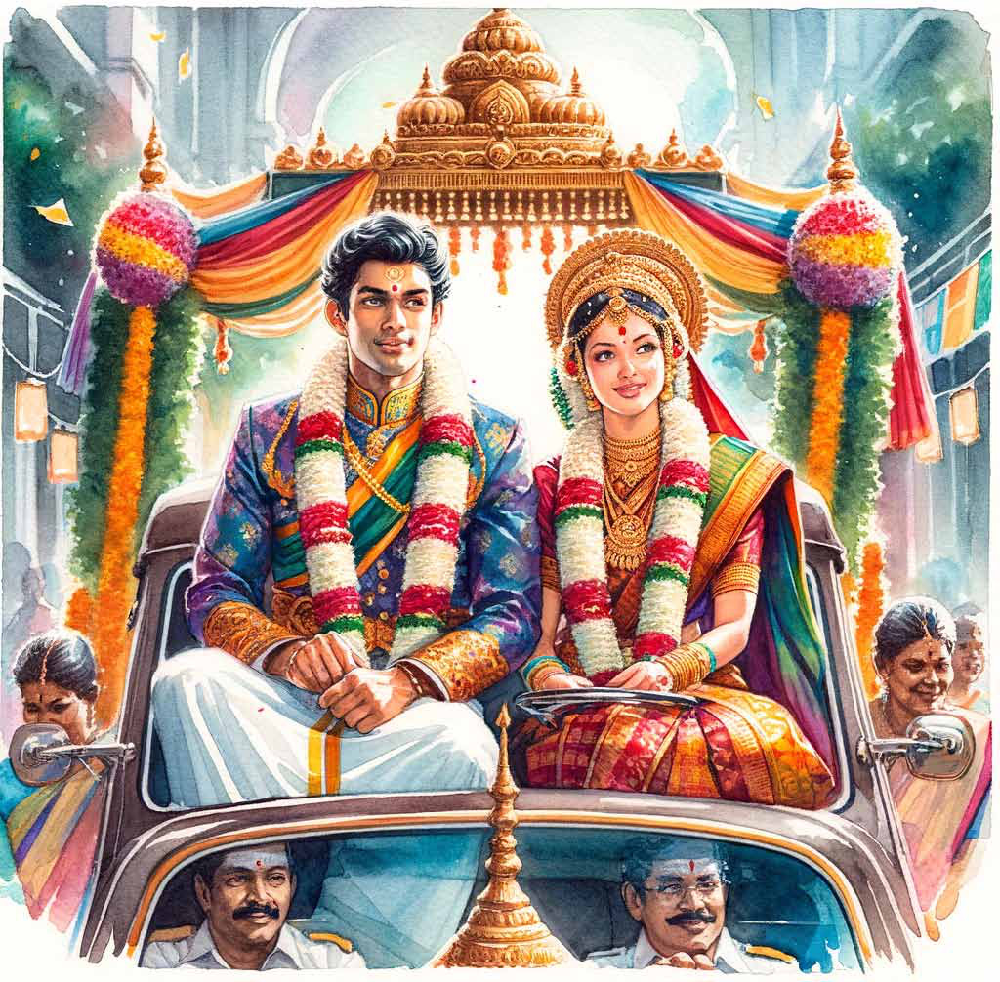

A Voice for the Voiceless: An LTTE Veteran's Letter to Karuna Amman
A Voice for the Voiceless: An LTTE Veteran's Letter to Karuna Amman
Jaffna Monitor hellojaffnamonitor@gmail.com 42 Dear Karuna, Addressing the Struggles of Our Eastern Comrades I recently read your interview in the Jaffna Monitor and felt compelled to write this letter to share my reflections. I remember our first meeting in Chennai when you were a young and ambitious fighter, taking up arms against the Sinhalese chauvinistic government. Those days in Chennai gave me valuable insights into your abilities and potential as a future leader. I also oppose the systematically created propaganda that labels northern fighters of the LTTE as martyrs while those who were with you during your split from the LTTE are branded as traitors. I do not subscribe to this view. The eastern fighters under your command made significant sacrifices for the Tamil cause. This is a point I am prepared to defend vigorously, backed by data, against anyone who challenges it. I still remember it as if it were yesterday. A team of 16 young fighters, including yourself, was initially assembled in Chennai. They were notable for their relatively small stature and the apparent need for significant physical development. This group was then dispatched to Pondicherry under the leadership of Shanthosam's master. Our organization arranged for their accommodation in a rented house. These young fighters underwent rigorous physical training and adhered to strict discipline. In addition to physical conditioning, educational sessions were conducted, which covered a range of topics, including Tamil history, politics, and military strategy. Among them, you, Karuna Amman, were particularly notable. My several encounters with you in Pondicherry allowed me to witness your capabilities firsthand. Shanthosam Master, a close acquaintance of mine, often spoke highly of your potential for leadership. Having observed A Voice for the Voiceless: An LTTE Veteran's Letter to Karuna Amman OPINION

Jaffna Monitor hellojaffnamonitor@gmail.com 43 your conduct and skills myself, I also came to recognize the inherent leadership qualities that were evident even in your youth. You distinguished yourself significantly among the 16 fighters. Notable for your soft- spoken demeanour and keen observational skills, you excelled in listening and displayed an admirable work ethic during physical training, often surpassing your peers in effort and self-discipline. Shanthosam Master rapidly developed a profound respect and admiration for you. During the third training batch, I noticed several distinctive qualities in you. After completing the training camp, you were directly selected for an intelligence group under our leader, Prabhakaran. One particular incident, mistakenly attributed to our organization by Indian agencies, highlighted your sharp intelligence and adept handling skills. Impressively, you managed to identify the actual perpetrator behind the incident. However, I choose not to go into further details about this specific event. Under your leadership in the Eastern region, our organization saw significant advancements, especially in the areas of recruitment and tactical operations. However, I must confess that I have always been heartbroken and firmly opposed to forced enlistment practices. Your leadership represented a considerable improvement over the efforts of previous commanders from the Batticaloa and Ampara districts, like Aruna, Kumarappa, and Pottu Amman. The strategic initiatives and their execution that you introduced played a crucial role in fortifying the LTTE's stance in this region. During the 2002-2003 period, I witnessed a concerning situation within our movement, particularly involving Thamilenthi, the head of the financial wing. It became increasingly clear that Thamilenthi was orchestrating a strategy that placed you in a precarious position. He sent a representative to Batticaloa, mandating the redirection of all funds collected in the Eastern region to the central financial wing. Your resistance to this directive, in my view, signalled the beginning of your discord with our leadership. Additionally, I came to learn that Thamilenthi was participating in negative conversations about you with our leader, Prabhakaran. This revelation was both shocking and disheartening to me. It was evident that our organization was at risk of losing a highly skilled military leader such as yourself, primarily due to Thamilenthi's misguided actions. This already tense situation was exacerbated by Pottu Amman, the chief of the LTTE's intelligence wing, whose systematic actions to corner you only served to escalate the conflict, akin to pouring oil on a raging fire. In the 1990s, I had firsthand experience with the challenges that Eastern fighters faced, particularly regarding access to nutritious food, an issue that persisted for an extended period. During my three-month deployment in the Paduvankarai region, other Eastern fighters and I directly encountered these hardships. Our diet was limited to beef seasoned solely with salt, with no variety. Consequently, many fighters suffered from severe weight loss and diarrhoea. The financial wing of our organization, led by Thamilenthi, was responsible for this dire situation due to its failure to allocate adequate funding to the Eastern region for essential supplies. However, during the peace period, even though I was not directly with you at that time, I observed a notable change. It was only then that the Eastern fighters could finally enjoy a variety of foods and have nutritious,
Jaffna Monitor hellojaffnamonitor@gmail.com 44 satisfying meals after a long duration of deprivation. Remarkably, this improvement in living conditions was managed solely with the resources generated within the Eastern region itself. In light of these circumstances, Thamilenthi's directive to channel all funds collected in the Eastern region to the central financial wing was quite unjust. This decision seemed to disregard the unique and pressing needs of the Eastern fighters, who had already endured considerable hardships due to previous financial neglect. Many fighters who joined the movement under your leadership were summoned to Vanni to participate in battles in the Northern regions. Tragically, numerous of these fighters met heroic deaths, and their remains now rest in cemeteries at locations like Theraavil Thuyilum Illam. Furthermore, a significant number of Eastern fighters sustained injuries in these Northern conflicts, leading to partial or complete disability. A substantial proportion of these disabled Eastern fighters currently reside in the Vanni region. Despite the influx of funds during the LTTE's peak, the living conditions provided for these injured Eastern fighters in Vanni were, and continue to be, substandard. For instance, in places like Valluvarpuram, where many Eastern fighters were accommodated, the conditions were critical. The area lacked proper roads, drinking water, and sanitation facilities. Additionally, job opportunities for these individuals are extremely limited. As I now reside overseas, my ability to assist is constrained to supporting only a few with my personal income. However, I believe the responsibility to aid in their livelihood predominantly rests on your shoulders. Organizations operating overseas often overlook the fighters from Batticaloa and Ampara as they continue to perceive them through the outdated lens associated with the Karuna group. Consequently, I urge you to demonstrate compassion towards these fighters from Batticaloa and Ampara residing in Vanni. Fulfilling this responsibility is a moral imperative and a duty that falls upon you. Support for the fighters from the East is unfortunately limited, with many needing more willingness to provide assistance. Additionally, there exists a reluctance among potential helpers, driven by a fear of being labelled as traitors. Despite these challenges, Lucas, the brother of Nadesan, former political Head of the Liberation Tigers, took a few initiatives to aid the Eastern fighters. Utilizing the funds allocated by the Liberation Tigers during the peace period, he extended significant support. However, with these funds now depleted, his assistance has ceased. In light of this situation, your involvement, Karuna, becomes imperative. With your capabilities and the connections you have established with the government, it is within your power to significantly aid these former fighters. Your support in these challenging times would be invaluable and a testament to your commitment to the welfare of those who once stood alongside you. Fought for your commands and died on your commands. Your's K.S. Lakshmi Note: This piece was written by an ex-leading figure of the LTTE and translated by the Jaffna Monitor team. The author chose to publish un- der a pseudonym.
Jaffna Monitor hellojaffnamonitor@gmail.com 45 Story “ Speed it up a little,” said Namacivāyam. His wife Pārvathi ran inside to find someone else who could do the ālatti with her. Rāghavaṉ clasped Sānthiṉi’s hand. It was as if he wanted to wrap his hand around her slender flower-like hand to announce to the whole world that she was now his. Procession Translated from the original Tamil short story ūrvalam (Ch;tyk;) from the 1964 collection of short stories titled akkā (mf;fh) by A. Muttulingam Translated by: Eḻuttukkiṉiyavaṉ (vOj;Jf;fpdpatd;)
Jaffna Monitor hellojaffnamonitor@gmail.com 46 Sānthiṉi’s fingers didn’t speak to his. There was no liveliness nor emotion in them. For whatever reason, she stood there like an emotionless piece of wood. Amidst the waves of humanity, that colorful car, decorated like a swan, was crawling slowly. It was beautiful, very like a swimming swan. Sānthiṉi gently cast her eyes to the right. Rāghavaṉ’s appearance was delightful. He looked very handsome in his silk vetti salvai, just as she had imagined. Although the gold kadukkaṉ that glittered in his ear made her giggle a little, she really liked how he looked. She couldn’t really see him earlier at the maṇavaṟai through all that smoke rising from the ritual ōmam fire. Nevertheless, somehow, she was not exactly bubbling with excitement. Now she felt like she could have done without the very procession that she had been looking forward to so eagerly. Even the morning before she was racked with worry. She was dreaming about all the different ways as to how she should walk or sit next to her husband! The groom got into the car and sat down. Sānthiṉi, too, got in and sat down next to him, barely touching him. Following them, as is customary, all the village tots crowded into the car asserting their rights for equal treatment with the bride and groom. Namacivāyam had such a difficult time, my goodness! They were little devils, not little children. Somehow, with the grace of God, the newlyweds began the procession, struggling to breath amidst being crushed all around. The driver proudly stepped on the gas pedal. The gigantic procession started inching forward. Here comes the first corner. This is the house of Kamalā; Sānthiṉi’s best friend. Sānthiṉi’s eyes lifted up gently and scanned the row of poṭṭus along the fence, those little openings meant for people to take a shortcut through the fence. That was where Kamalā would be waiting. Doesn’t it take a thief to know one? Sānthiṉi’s eyes shone momentarily.

Jaffna Monitor hellojaffnamonitor@gmail.com 47 But then they went back to the same lifeless stare. At the university, Sānthiṉi thought Rāghavaṉ was just a friend. She didn’t at all expect that their friendship would blossom into romance leading to marriage. More than Rāghavaṉ himself, she loved his intellect. But now Rāghavaṉ himself is hers — her property. The sound of laughter. Sānthiṉi lifted her head slightly. Maṇiyaṇṇai was teasing them. But her gaze drifted to the peepul tree ahead. The same peepul tree. Then there was only a lone statue of the elephant-headed deity who removes all obstacles, Piḷḷaiyār, under the tree, not a small temple like there is now. At this very temple, ten years ago, she and her cousin Māṇikkam had played house. Now —. “Chee! What a thought? It was just silly children’s play a long time ago. It shouldn’t …”
Jaffna Monitor hellojaffnamonitor@gmail.com 48 “What? Children’s play? Why? Even two years ago, when you came home for vacation from the university, your cousin, that postman cousin, came to see you.” “When he stood apart as though there was no connection between him and you, you dragged him into a conversation!” “Why are you silent? Just because I went away to study, does it mean I have forgotten you?” You did say “call me 'Santha’ just like in the old times. I won’t like it at all if you start behaving differently with me.” Was that stupidity or what? “Santhi, how long does the groom have to wait for you to get out of the car? You are drifting along in some dream world!” Sānthiṉi jolted herself out of her reverie and got out of the car. Rāghavaṉ glanced at her out of the corner of his eye and smiled.

Jaffna Monitor hellojaffnamonitor@gmail.com 49 She beseeched the same peepul tree Pillaiyar to bless her with a strong marriage. Untypically she kept thinking of her cousin. Why have such thoughts when her loving husband, her husband who shares her joys and her sorrows, was right next to her? She pushed that thought away. They walked around the Peepul tree. As she circled the sacred tree, she resolved never to give into the same thought again. But her resolve was tested right away. When she turned the third corner of the peepul tree, her blood froze. On the base of that peepul tree, which was illuminated in patches by the gas light, the letters “Māṇikkam - Sānthiṉi” came into view clearly. She read the letters. She felt as if her body was falling apart. Her hands were shaking. She pressed her chest hard. She remembered that incident. Māṇikkam had carved only his name and came running to drag Sānthiṉi to the tree to show her. When she saw the letters “Māṇikkam,” she had started crying, demanding that her name should be carved right next to it. But as soon as the letter “Sā” was carved, his pocketknife broke. My goodness! She had thrown a fit. Unable to withstand her nagging, Māṇikkam somehow procured another knife and carved the remaining letters. What joy did she feel then! `Chee! Do I have even a hundredth of the gratitude that this peepul tree is displaying? It is still faithfully showing every letter that was carved so long ago. What can be said about the words that were uttered that day … …’ 'My God, my god, the same thought, again and again?’ … … Something plopped down on her back. Startled, Sānthiṉi was turned to look. The gang of tots in the car had started to fall asleep. It was Raviyan who had fallen on her. Rāghavaṉ laughed, asking “did you get scared?” Does a bride respond verbally? She used this as an excuse to cast her eyes down. The car stopped at the junction. It was a major junction. Would the procession command respect if they didn’t stop at this junction to deliver an excellent “performance”? Maṇiyam aṇṇai made sure every single thing that Sānthiṉi had requested the other day was carried out to perfection. But did Sānthiṉi really need all that now? First the traditional wind instrument nādhaswaram started to explore the rāgas. The nāttaikuṟiñji rāgam came piercing through the stem of the nādhaswaram. How did this rāga acquire such a sense of sadness? The player is squeezing all the world’s sadness through his instrument. After all, should he really play such heartrending music just at this instant? She turned to her husband. But he was very quietly enjoying the music with joy. Her heart missed a beat.
Jaffna Monitor hellojaffnamonitor@gmail.com 50 Do we diverge even in this little matter? “Let us finish with the thavil quickly. It is going to be eleven soon,” Maṇiyam aṇṇai said. She wanted to thank Maṇiyam aṇṇai profusely. Sleepiness. Everyone walked a little faster. Sānthiṉi lifted her head gently to look at the sky. It looked like it might rain. Stars glittered here and there. She wondered where the Arundhathi star was, the exemplary wife of the sage Vasishta who is pointed out to Hindu newlyweds. During the ceremony, when it came to the point where the priest had to point out Arundhathi to the couple, he had merely pointed to the roof. “There comes my school at a distance. This is the path that Kamalā, Maṉōṉmaṇi, and I took to go to school, barely managing to lug our heavy school bags along. Is that sand dune still there? That was where my cousin and I used to sit side by side, doing sums, drawing,

Jaffna Monitor hellojaffnamonitor@gmail.com 51 or playing house.” “Can we play like that again?” Suddenly her heart began to feel heavy. In that pitch darkness, her cousin’s form appeared before her. “Sānthiṉi! Ten years ago, when I lamented that I didn’t understand math, didn’t you wipe my tears with your tiny fingers and say ’I will teach you’? How many times did you try to teach me math? But nothing went into my brain.” “Then you would hug me and say 'Aiyō! You are a dummy!’ Where did that love go?” “What divides us today? Your B.A. degree.” “Why would you remember this poor postman?” What is this? This procession is turning onto maṇiyakkāra road? What? Is it really going that way? Sānthiṉi’s heart sank. When the procession turned the corner, she looked to see if the thatched roof and the broken gate came into view. “Chee! Why is he standing there? He refused to come to the wedding. Did he want to see the grand sight of me walking in the procession in the middle of the night? As the car passed the cottage, her heart fluttered. Unable to quell her curiosity, she turned to look. She froze to the core. It was her cousin indeed, standing against the pillar, staring intently at her haughty self without self-awareness. It passed in a moment. Still, she thought she saw two tiny teardrops glittering in those eyes. Suddenly, a cobra started to strangle Sānthiṉi’s neck. Startled, she looked down — no, it was just the garland she was wearing. She bent her head downwards to hide the tears. But Rāghavaṉ already noticed it: only the tears. “Why! Sānthiṉi, is the gas light hurting your eyes? Why didn’t you tell me earlier?” He chided her gently. “Vēlu, take this lamp further away,” he commanded with the authority of the groom. How much he loved her! As the gas light moved away its buzzing increased. She couldn’t bear that buzzing. “Chee! What illusion is this? Where is this buzzing coming from?” “Perhaps perhaps, is this is my cousin heaving a great sigh?” She couldn’t even imagine. Her heart felt heavy. She grasped her chest. Her fingers felt something. That was the brand new thāli that Rāghavaṉ had tied around her neck.